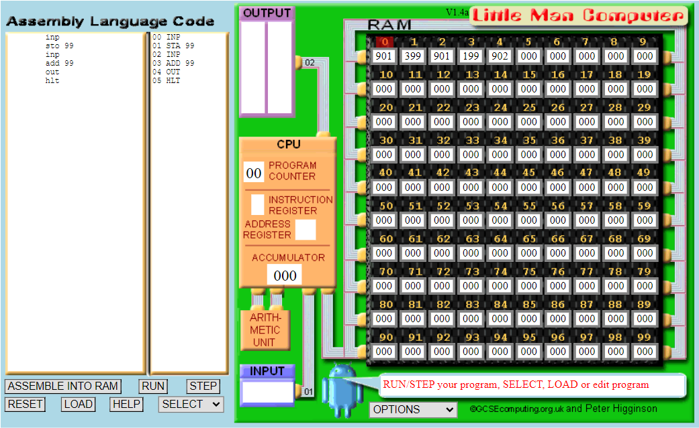
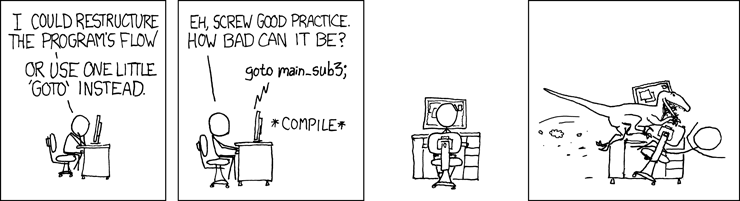

Assembly#
Welke taal spreekt een computer?
Machinetaal#

Programma’s worden opgeslagen in het geheugen in machinetaal. Een taal dat puur bestaat uit bits. Dit is de eerste generatie programmeer taal. Het is bijna onleesbaar voor ons mensen.
Assembleertaal (assembly)#

Assembly is een voor mensen leesbare machinetaal. Het is de tweede generatie programmeer talen
Derde generatie programmeer talen kunnen gebruikt worden om alles te programmeren wat mogelijk is. Als men het over programmeren heeft, valt het vaak in deze groep. Talen zoals Python, Java, C, C++, C#, Pascal en Basic vallen hieronder.
Vierde generatie talen zijn programmeer talen met een specifiek doel. SQL bijvoorbeeld voor databases en HTML voor websites.
Vijfde generatie talen zijn talen waarbij de programmeur regels opstelt waar de computer zich aan moet houden. De computer lost vervolgens zelf het probleem op. Logische programmeern talen zoals Prolog vallen hieronder.
Instructies#
Combinatie van data en handelingen
Machinetaal
0000 0001 0000 0001
Assembly
load r1
LMC Assembly#
LMC staat voor Little Man Computer en is een versimpelt model voor een CPU met een bijpassende assembly taal.

Instructies komen aan de linkerkant. Door submit te drukken wordt het programma geladen in het RAM geheugen. Zodra het geladen is kan er op run gedrukt worden om het programma te draaien.
De program counter houdt bij welke instructie de volgende is. De accumulator bewaart de uitkomst van de laatste uitgevoerde opdracht of berekening. Beide zijn speciale registerst binnen de LMC CPU.
Instuctieset#
LMC heeft maar een beperkte hoeveelheid instructies, het zijn er maar 9.
Code |
Naam |
Beschrijving |
|---|---|---|
000 |
HLT |
Stop |
1XX |
ADD XX |
Tel het getal in geheugen plaats XX op bij het getal die in de accumulator staat |
2XX |
SUB XX |
Trek het getal in geheugen plaats XX af van het getal die in de accumulator staat |
3XX |
STA or STO XX |
Sla het getal in de accumulator op in geheugenplaats XX |
5XX |
LDA XX |
Laad het getal in geheugen plaats XX naar de accumulator |
6XX |
BRA XX |
Spring naar instructie XX |
7XX |
BRZ XX |
Spring naar instructie XX als het getal in de accumulator nul is |
8XX |
BRP XX |
Spring naar instructie XX als het getal in de accumulator groter of gelijk is aan nul |
9XX |
INP or OUT |
Input or Output. Vraag om imput als XX gelijk is aan 01, Geeft output als XX gelijk is aan 02. |
Ons eerste programma#
Instructie |
Bijschrijving |
|---|---|
inp |
vraag om input en bewaar deze in de accumulator |
sto 99 |
Bewaar de waarde dat in de accumulator staat in register 99 |
inp |
Vraag om input en bewaar deze in de accumulator |
add 99 |
Tel het getal in geheugen plaats 99 op bij het getal die in de accumulator staat |
out |
Geef de waarde dat in de accumulator staat als output |
hlt |
einde programma |
Het draaien van een assembly programma kan je als volg noteren. Noteer de instructie in colomn 1. Wat er aan het einde van de instructie in de ALU staat noteer je in colomn 2. Als er iets in het geheugen wordt opgeslagen/verandert noteer je dat in colomn 3. Als er om input/output wordt gevraagd noteren we dat in colomn 4.
instructie |
Accumulator |
Geheugen |
Input/Output |
|---|---|---|---|
inp |
32 |
Input is 32 |
|
sto 99 |
32 |
#99 = 32 |
|
inp |
14 |
input is 14 |
|
add 99 |
14 + 32 = 46 |
||
out |
46 |
output is 46 |
|
hlt |
Jumps#
Assembly heeft een jump instructie, ook wel branch genoemd of een Goto. Hiermee kan er aan gegeven worden naar welke instructie er gesprongen moet worden. Er kan vooruit en achteruit gesprongen worden in assembly.
nummer |
Instructie |
Bijschrijving |
|---|---|---|
00 |
inp |
vraag om input en bewaar deze in de accumulator |
01 |
sto 98 |
Bewaar de waarde dat in de accumulator staat in register 98 |
02 |
add 98 |
Tel het getal in geheugen plaats 98 op bij het getal die in de accumulator staat |
03 |
out |
Geef de waarde dat in de accumulator staat als output |
04 |
bra 02 |
Jump naar instructie 2 |
05 |
hlt |
Einde programma |
Dit programma zal oneindig hetzelfde getal optellen. De jump op regel 04 wordt altijd uitgevoerd. Er bestaan ook voorwaardelijke jumps; een jump dat alleen wordt uitgevoerd als er aan een voorwaarde is voldaan. LMC kent twee voorwaardelijke jumps; BRZ waarbij de accumulator gelijk aan 0 moet zijn (BRanch if Zero) en BRP waarbij de accumulator gelijk aan 0 of hoger moet zijn (BRanch if Positive)
Door het bijhouden van een counter kan een programma naar hlt jumpen zodra de counter 0 heeft bereikt. Het is dan wel nodig om op geheugenplaats 99 een 1 in te voeren voordat het programma gedraait wordt.
nummer |
Instructie |
Bijschrijving |
|---|---|---|
00 |
inp |
Vraag om input en bewaar deze in de accumulator |
01 |
sto 98 |
Bewaar de waarde dat in de accumulator staat in register 98 |
02 |
out |
Geef de waarde dat in de accumulator staat als output |
03 |
brz 05 |
Jump naar instructie 05 als de waarde op de accumualtor gelijk is aan 0 |
04 |
sub 99 |
Trek het getal in geheugen plaats 99 af van het getal die in de accumulator staat |
05 |
bra 02 |
Jump naar instructie 2 |
05 |
hlt |
Einde programma |
Dit creeert dus een loop die zich een gegeven aantal keren herhaalt. Zo’n loop kan gebruikt worden om een vermeninigvuldiging in LMC te programmeren. Vermenigvuldigen is namelijk niks anders dan een gegeven aantal keer optellen. \(5 * 2 = 2 + 2 + 2 + 2 + 2\)
Wat belangrijk is bij het schrijven met Assembly is het gebruik van geheugen. Waar wordt wat opgeslagen. Het is onverstandig om Data op te slaan waar een instructie staat. In de voorbeelden wordt de data opgeslagen op de hoge nummers.
Bij het schrijven van een vermenigvuldeging moet er dus ook nagedacht worden over geheugen. Waar wordt het antwoord bijgehouden en in welke register de counter? In onderstaand voorbeeld wordt het antwoord bijgehouden in register 96 en de counter in 97. Ook bij dit programma wordt er handmatig een 1 geplaats in register 99.
nummer |
Instructie |
Bijschrijving |
|---|---|---|
00 |
inp |
vraag om input en bewaar deze in de accumulator |
01 |
sto 98 |
Bewaar de waarde dat in de accumulator staat in register 98 |
02 |
inp |
Vraag om input en bewaar deze in de accumulator |
03 |
sto 97 |
Bewaar de waarde dat in de accumulator staat in register 98 |
04 |
brz 12 |
Als de waarde in de accumulator 0 is, jump naar instructie 12 |
05 |
lda 96 |
Lees de waarde van 96 en sla deze op in de accumulator |
06 |
add 98 |
Tel het getal in geheugen plaats 98 op bij het getal die in de accumulator staat |
07 |
sto 96 |
Bewaar de waarde dat in de accumulator staat in register 96 |
08 |
lda 97 |
Lees de waarde van register 97 en sla deze op in de accumulator |
09 |
sub 99 |
Trek het getal in geheugen plaats 99 af van het getal die in de accumulator staat |
10 |
sto 97 |
Bewaar de waarde dat in de accumulator staat in register 97 |
11 |
bra 04 |
Jump naar instructie 4 |
12 |
lda 96 |
lees de waarde van register 97 en sla deze op in de accumulator |
13 |
out |
Geef de waarde dat in de accumulator staat als output |
14 |
hlt |
Einde programma |
Bij programmeren met Assembly is geheugen gebruik dus belangrijk. Daarnaast wordt Assembly code al snel onverzichtelijk als er veel jumps in het programma staan. Het wordt dan snel zogenaamde spaghetti code. Mede daardoor heeft men de derde generatie talen ontwikkeld. Gezien een computer deze talen niet kent is er een vertaler nodig om programmeer talen om te zetten in machinetaal.
Met de komst van deze talen heeft de programmeur onder andere toegang tot variabelen en regelt de computer zelf waar de data wordt opgeslagen. Jumps zijn niet meer nodig, ook dat regelt de computer zelf. Jumps (a.k.a. Goto statements) gebruiken in een derde generatie taal wordt dan ook gezien als bad practice.
